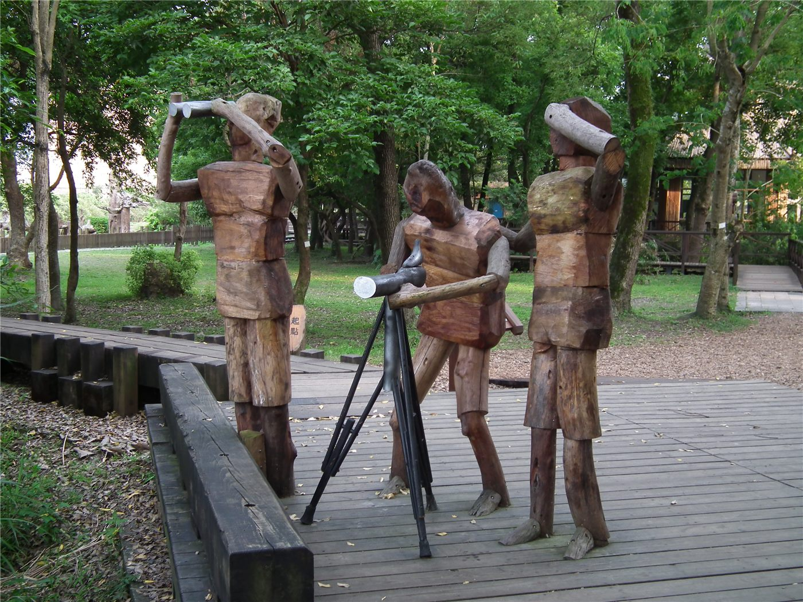

사막에 나무를 심던 두 사람, 다시 만나 '민간 우호수'를 심다
중국 네이멍구에서 사막 녹화에 힘써 온 인위전 씨와 미국인 자원봉사자가 오랜 시간이 지나 재회했다. 두 사람은 함께 나무를 심고 이를 '민간 우호수'라 이름 붙였다.
조계현 기자 · 2026.09.05
橋화인소식

인위전 씨는 네이멍구 마오우쑤 사막 지역에서 수십 년간 나무를 심어 온 인물로 알려져 있다. 모래에 덮인 땅을 조금씩 녹지로 바꿔 온 작업이었다.
광고 문의 · 300×250이번에 그를 다시 찾은 미국인은 과거 사막 녹화 작업에 자원봉사자로 참여했던 사람이다. 당시 함께 삽을 들었던 인연이 오랜 시간이 지나 재회로 이어졌다.
두 사람은 재회를 기념해 묘목을 심고 '중미 민간 우호수'라는 이름을 붙였다. 나무가 자리를 잡으려면 물 관리와 몇 해에 걸친 돌봄이 필요하다.
사막 녹화는 성과가 보이기까지 시간이 오래 걸리는 일이다. 심은 나무 가운데 상당수가 초기에 말라 죽고, 살아남은 나무가 모래를 붙잡아 다음 나무의 자리를 만든다.
국가 간 관계가 오르내리는 동안에도 개인 사이의 인연은 각자의 속도로 이어진다. 이런 종류의 재회가 뉴스가 되는 이유이기도 하다.
출처·참고 (사실 확인용 — 본문은 직접 재작성)
· 環球網 2026-08-25 — https://china.huanqiu.com/
· 環球網 2026-08-25 — https://china.huanqiu.com/